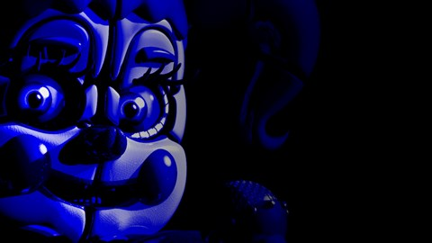

Em *Sister Location*, o jogador assume o papel de Michael Afton e explora uma nova instalação da Fazbear Entertainment. O jogo introduz novos animatrônicos e uma narrativa mais focada em exploração e resolução de puzzles.Animatrônicos Avançados: O jogo introduz Circus Baby, Ballora, Funtime Freddy e Funtime Foxy, cada um com uma personalidade e comportamento únicos. Os Aftons: A história se aprofunda nos experimentos de William Afton, revelando que ele criou animatrônicos projetados para capturar crianças. Enredo Dividido: O jogador descobre que Baby é possuída por Elizabeth Afton, filha de William, que morreu devido a um acidente causado pelo animatrônico.
